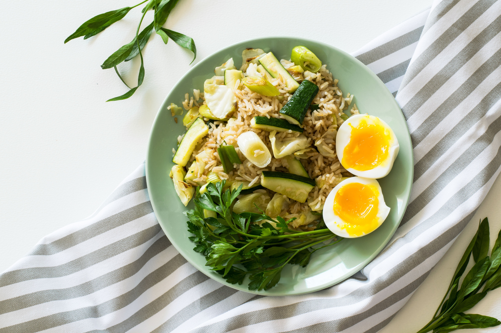

Health Japanese Fried Rice
Prep time15 Minutes
Cook time15 Minutes

Fresh, comforting, and full of color, this Japanese-inspired fried rice combines fluffy rice, tender vegetables, and soft-boiled eggs. It’s a satisfying meal that comes together quickly, making it perfect for lunch or a relaxed dinner. Finish with fresh herbs and a splash of soy sauce to bring all the flavors together.